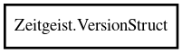

VersionStruct
Object Hierarchy:

Description:
public struct VersionStruct
Version struct consisting of the following fields: - major - minor - minus
Content:
Fields:
- public int major
Major version number.
- public int micro
Micro version number.
- public int minor
Minor version number.